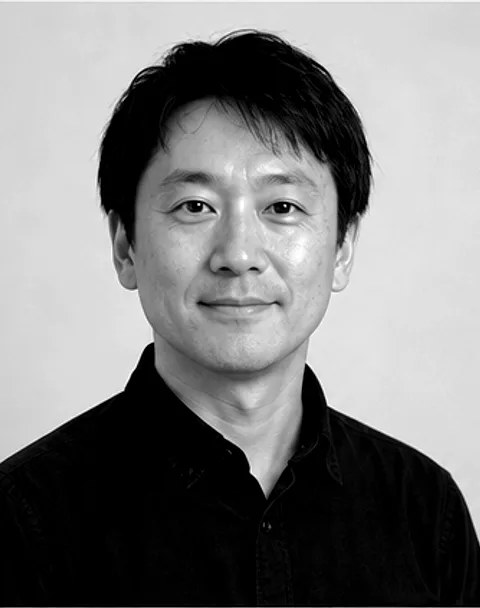
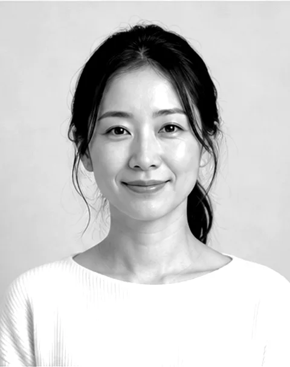
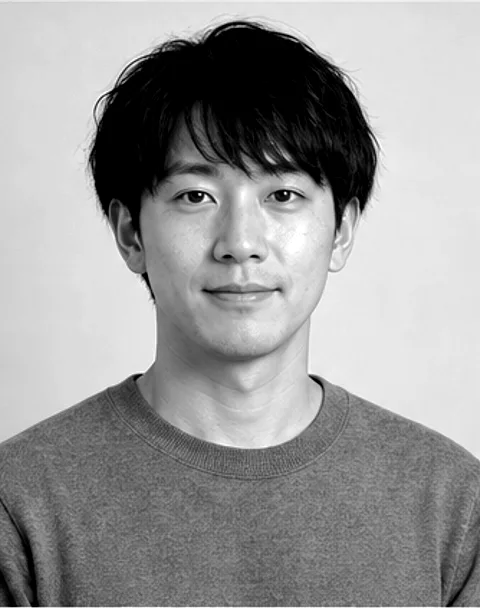

YAGURAGISoichi
Structural Engineer / Representative
櫓木 惣一代表取締役／構造設計
構造設計一級建築士。構造設計事務所で12年間、事務所ビルや集合住宅の構造を担当したのち、2011年にヤグラ設計機構を立ち上げました。
図面より先に模型をつくるのが習慣で、事務所の模型工房には小さな旋盤まで置いています。打合せでは、計算の数字よりも「この梁がどこへ力を流しているか」を手で示しながら話します。

YAGURAGISoichi
Structural Engineer / Representative
構造設計一級建築士。構造設計事務所で12年間、事務所ビルや集合住宅の構造を担当したのち、2011年にヤグラ設計機構を立ち上げました。
図面より先に模型をつくるのが習慣で、事務所の模型工房には小さな旋盤まで置いています。打合せでは、計算の数字よりも「この梁がどこへ力を流しているか」を手で示しながら話します。

SERIZAWAMinamo
Architect / Design Director
住宅と店舗の設計を手がける設計事務所を経て、2015年に入社。ヤグラ設計機構が意匠設計を始めるきっかけになった一人です。
事務所でいちばん現場に足を運ぶ設計者で、仕上げや納まりの相談は大体この人のところに集まります。構造の担当と並んで座り、柱の位置が決まる前から部屋の使い方を書き込んでいきます。

SOGORiku
Structural Engineer
大学院で木質構造を学び、2022年に入社。解析モデルを組むのが速く、複数の架構案を短い時間で比べる場面で頼りにされています。
池尻ハコベヤでは、接合部の検討と現場での試し組みを担当しました。休日は古い橋を見て回り、写真と簡単なスケッチを事務所の壁に貼っています。
ヤグラ設計機構は9名の事務所です（2026年10月現在）。一つの計画には、構造と意匠の担当が必ず1人ずつ付き、最初の打合せから竣工まで同じ顔ぶれで進めます。
構造設計だけのご依頼でも、意匠の担当が打合せに同席することがあります。間取りや仕上げの言葉で骨組みの話ができるようにするためです。
骨組みの相談は、
図面になる前がいちばん効きます。
敷地を見ただけの段階でも、既存の建物の図面が見つからない段階でも構いません。まずは話を聞かせてください。
受付 平日 9:30〜18:00